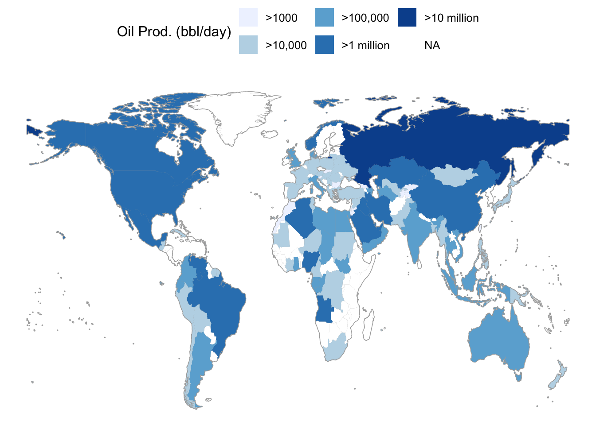
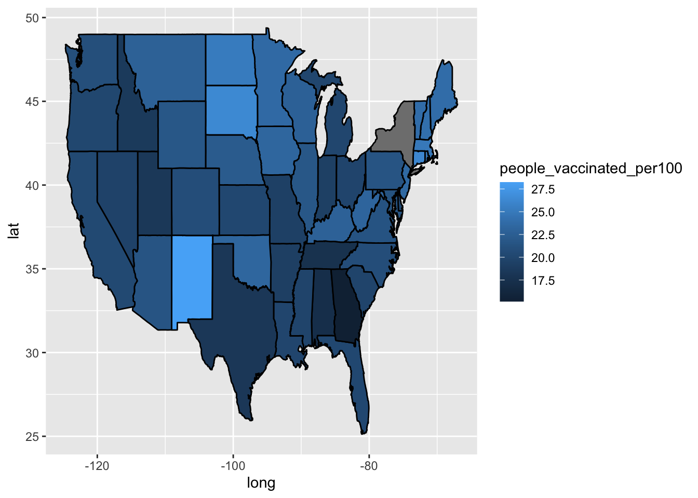
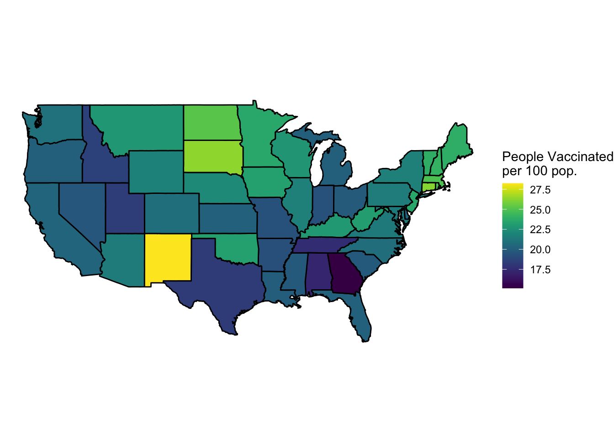
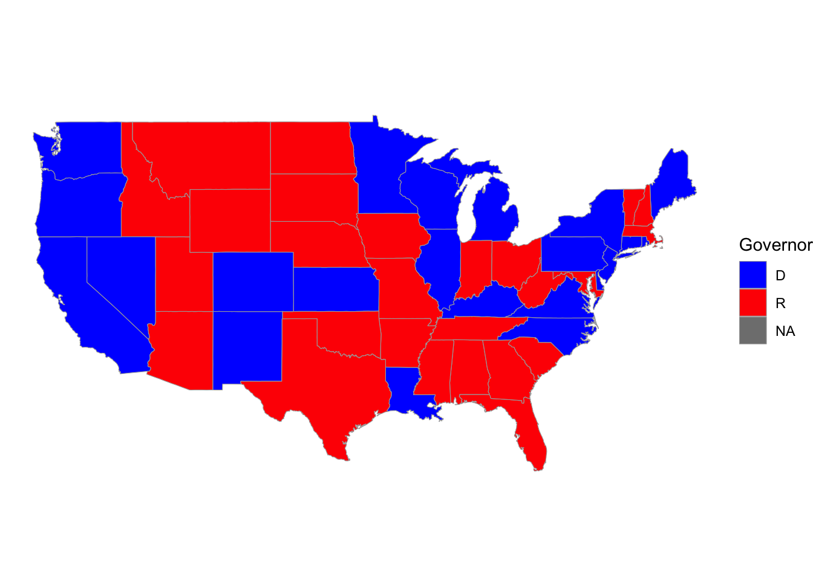
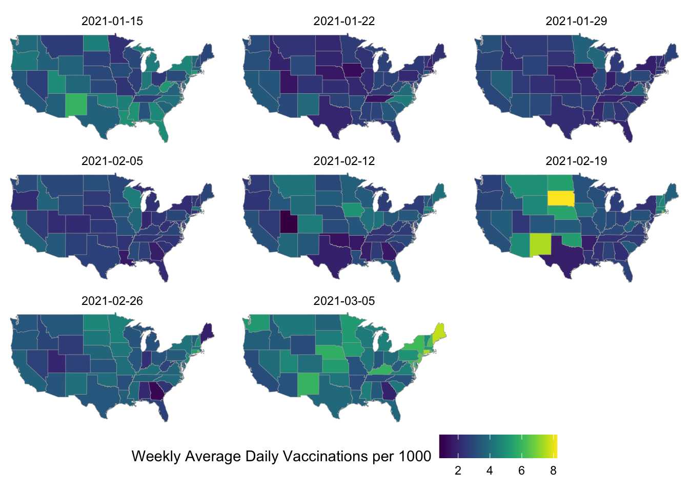
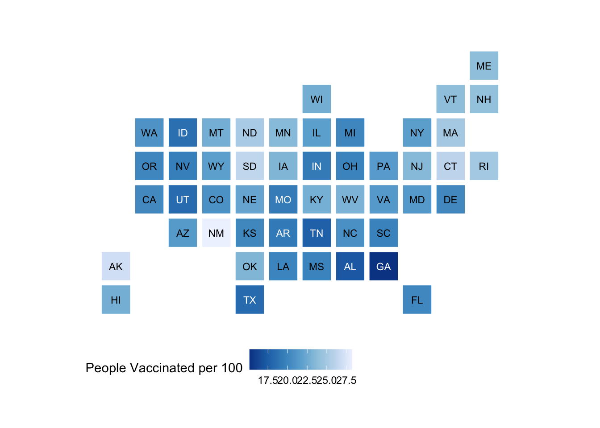
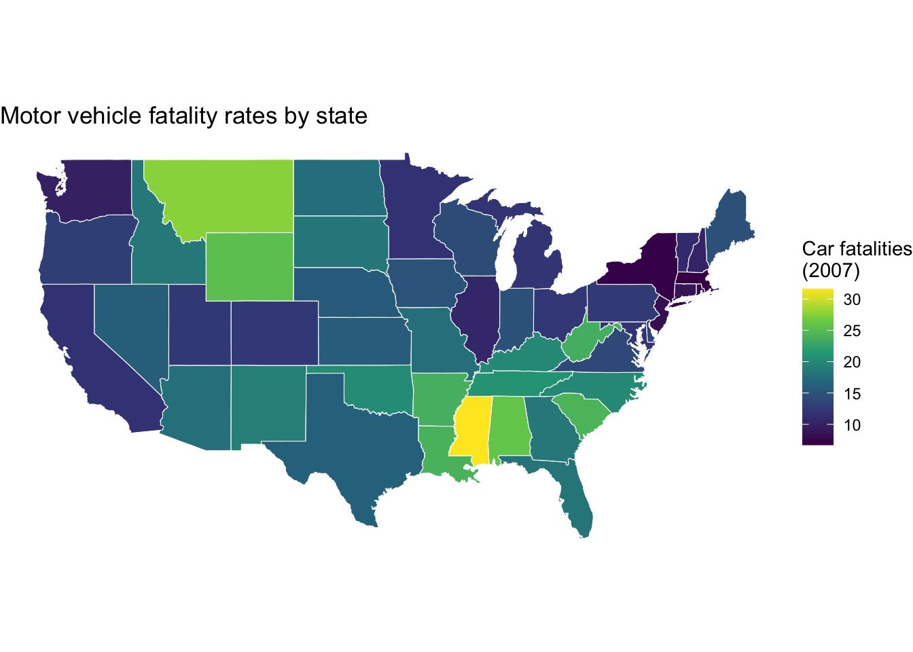
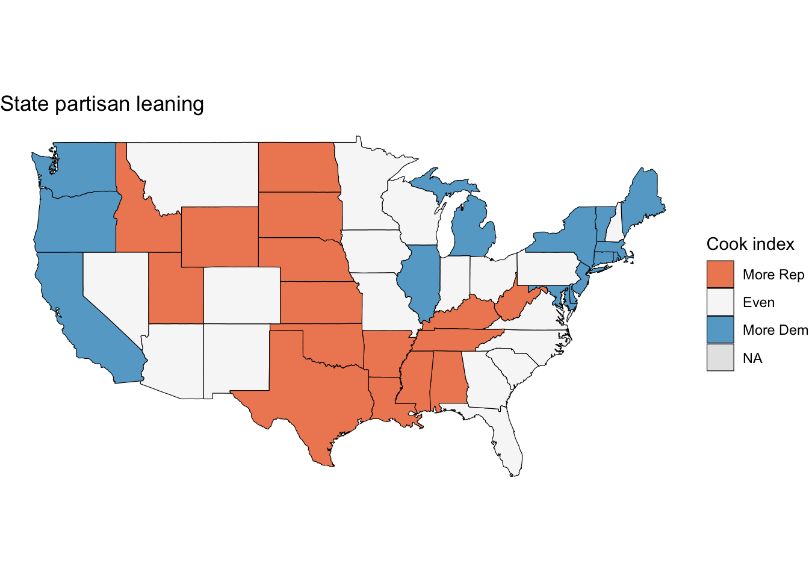

# Initial packages required (we'll be adding more)
library(tidyverse)
library(mdsr) # package associated with our MDSR bookCreating informative maps
You can download this .qmd file from here. Just hit the Download Raw File button.
Opening example
Here is a simple choropleth map example from Section 3.2.3 of MDSR. Note how we use an underlying map with strategic shading to convey a story about a variable that’s been measured on each country.
# CIACountries is a 236 x 8 data set with information on each country
# taken from the CIA factbook - gdp, education, internet use, etc.
head(CIACountries)
CIACountries |>
select(country, oil_prod) |>
mutate(oil_prod_disc = cut(oil_prod,
breaks = c(0, 1e3, 1e5, 1e6, 1e7, 1e8),
labels = c(">1000", ">10,000", ">100,000", ">1 million",
">10 million"))) |>
1 mosaic::mWorldMap(key = "country") +
geom_polygon(aes(fill = oil_prod_disc)) +
scale_fill_brewer("Oil Prod. (bbl/day)", na.value = "white") +
theme(legend.position = "top")- 1
- We won’t use mWorldMap often, but it’s a good quick illustration

country pop area oil_prod gdp educ roadways net_users
1 Afghanistan 32564342 652230 0 1900 NA 0.06462444 >5%
2 Albania 3029278 28748 20510 11900 3.3 0.62613051 >35%
3 Algeria 39542166 2381741 1420000 14500 4.3 0.04771929 >15%
4 American Samoa 54343 199 0 13000 NA 1.21105528 <NA>
5 Andorra 85580 468 NA 37200 NA 0.68376068 >60%
6 Angola 19625353 1246700 1742000 7300 3.5 0.04125211 >15%Choropleth Maps
When you have specific regions (e.g. countries, states, counties, census tracts,…) and a value associated with each region.
A choropleth map will color the entire region according to the value. For example, let’s consider state vaccination data from March 2021.
vaccines <- read_csv("https://joeroith.github.io/264_spring_2026/Data/vacc_Mar21.csv")
vacc_mar13 <- vaccines |>
filter(Date =="2021-03-13") |>
select(State, Date, people_vaccinated_per100, share_doses_used, Governor)
vacc_mar13# A tibble: 50 × 5
State Date people_vaccinated_per100 share_doses_used Governor
<chr> <date> <dbl> <dbl> <chr>
1 Alabama 2021-03-13 17.2 0.671 R
2 Alaska 2021-03-13 27.0 0.686 R
3 Arizona 2021-03-13 21.5 0.821 R
4 Arkansas 2021-03-13 19.2 0.705 R
5 California 2021-03-13 20.3 0.726 D
6 Colorado 2021-03-13 20.8 0.801 D
7 Connecticut 2021-03-13 26.2 0.851 D
8 Delaware 2021-03-13 20.2 0.753 D
9 Florida 2021-03-13 20.1 0.766 R
10 Georgia 2021-03-13 15.2 0.674 R
# ℹ 40 more rowsThe tricky part of choropleth maps is getting the shapes (polygons) that make up the regions. This is really a pretty complex set of lines for R to draw!
Luckily, some maps are already created in R in the maps package.
library(maps)
us_states <- map_data("state")
head(us_states) long lat group order region subregion
1 -87.46201 30.38968 1 1 alabama <NA>
2 -87.48493 30.37249 1 2 alabama <NA>
3 -87.52503 30.37249 1 3 alabama <NA>
4 -87.53076 30.33239 1 4 alabama <NA>
5 -87.57087 30.32665 1 5 alabama <NA>
6 -87.58806 30.32665 1 6 alabama <NA>us_states |>
ggplot(mapping = aes(x = long, y = lat,
group = group)) +
geom_polygon(fill = "white", color = "black")
[Pause to ponder:] What might the group and order columns represent? Group tells R which point belong to the same shape, not just state but also subregion as well. ‘order’ looks like it ranks the latitude from highest to lowest. Oreder is also about what drawing order within that shape
Other maps provided by the maps package include US counties, France, Italy, New Zealand, and two different views of the world. If you want maps of other countries or regions, you can often find them online.
Where the really cool stuff happens is when we join our data to the us_states dataframe. Notice that the state name appears in the “region” column of us_states, and that the state name is in all small letters. In vacc_mar13, the state name appears in the State column and is capitalized. Thus, we have to be very careful when we join the state vaccine info to the state geography data.
Run this line by line to see what it does:
vacc_mar13 <- vacc_mar13 |>
mutate(State = str_to_lower(State))
vacc_mar13 |>
right_join(us_states, by = c("State" = "region")) |>
rename(region = State) |>
ggplot(mapping = aes(x = long, y = lat,
group = group)) +
geom_polygon(aes(fill = people_vaccinated_per100), color = "black")
oops, New York appears to be a problem.
vacc_mar13 |>
anti_join(us_states, by = c("State" = "region"))# A tibble: 3 × 5
State Date people_vaccinated_per100 share_doses_used Governor
<chr> <date> <dbl> <dbl> <chr>
1 alaska 2021-03-13 27.0 0.686 R
2 hawaii 2021-03-13 22.8 0.759 D
3 new york state 2021-03-13 21.7 0.764 D us_states |>
anti_join(vacc_mar13, by = c("region" = "State")) |>
count(region) region n
1 district of columbia 10
2 new york 495[Pause to ponder:] What did we learn by running anti_join() above? Shows the mismatched of datasets ( the first data set is New york and the second one is New york state for example)
Notice that the us_states map also includes only the contiguous 48 states. This gives an example of creating really beautiful map insets for Alaska and Hawaii.
vacc_mar13 <- vacc_mar13 |>
mutate(State = str_replace(State, " state", ""))
vacc_mar13 |>
anti_join(us_states, by = c("State" = "region"))# A tibble: 2 × 5
State Date people_vaccinated_per100 share_doses_used Governor
<chr> <date> <dbl> <dbl> <chr>
1 alaska 2021-03-13 27.0 0.686 R
2 hawaii 2021-03-13 22.8 0.759 D us_states |>
anti_join(vacc_mar13, by = c("region" = "State")) %>%
count(region) region n
1 district of columbia 10Better.
library(viridis) # for color schemes
vacc_mar13 |>
right_join(us_states, by = c("State" = "region")) |>
rename(region = State) |>
ggplot(mapping = aes(x = long, y = lat,
group = group)) +
geom_polygon(aes(fill = people_vaccinated_per100), color = "black") +
labs(fill = "People Vaccinated\nper 100 pop.") +
1 coord_map() +
2 theme_void() +
3 scale_fill_viridis()- 1
- This scales the longitude and latitude so that the shapes look correct. coord_quickmap() can also work here - it’s less exact but faster.
- 2
- This theme can give you a really clean look
- 3
- You can change the fill scale for different color schemes.

You can also use a categorical variable to color regions:
vacc_mar13 |>
right_join(us_states, by = c("State" = "region")) |>
rename(region = State) |>
ggplot(mapping = aes(x = long, y = lat,
group = group)) +
geom_polygon(aes(fill = Governor), color = "darkgrey", linewidth = 0.2) +
labs(fill = "Governor") + # this is where it changes
coord_map() +
theme_void() +
scale_fill_manual(values = c("blue", "red")) #<1> #manually fill blue and red 
- You can change the fill scale for different color schemes.
Note: Map projections are actually pretty complicated, especially if you’re looking at large areas (e.g. world maps) or drilling down to very small regions where a few feet can make a difference (e.g. tracking a car on a map of roads). It’s impossible to preserve both shape and area when projecting an (imperfect) sphere onto a flat surface, so that’s why you sometimes see such different maps of the world. This is why packages like maps which connect latitude-longitude points are being phased out in favor of packages like sf with more GIS functionality. We won’t get too deep into GIS in this class, but to learn more, take Spatial Data Analysis!!
Multiple maps!
You can still use data viz tools from Data Science 1 (like faceting) to create things like time trends in maps:
library(viridis)
library(lubridate)
weekly_vacc <- vaccines |>
mutate(State = str_to_lower(State)) |>
mutate(State = str_replace(State, " state", ""),
week = week(Date)) |>
group_by(week, State) |>
summarize(date = first(Date),
mean_daily_vacc = mean(daily_vaccinated/est_population*1000)) |>
right_join(us_states, by =c("State" = "region")) |>
rename(region = State)
weekly_vacc |>
filter(week > 2, week < 11) |>
ggplot(mapping = aes(x = long, y = lat,
group = group)) +
geom_polygon(aes(fill = mean_daily_vacc), color = "darkgrey",
linewidth = 0.1) +
labs(fill = "Weekly Average Daily Vaccinations per 1000") +
coord_map() +
theme_void() +
scale_fill_viridis() +
facet_wrap(~date) +
theme(legend.position = "bottom") 
[Pause to ponder:] are we bothered by the warning about many-to-many when you run the code above? Not really. the map data has many rows per state becayse each states is made of many boundary points.The weekly summary has one row per state-week. So after the join, each state-week value gets repeated across all the polygon points for that state. That is expected for map drawing.
Other cool state maps
statebin (square representation of states)
library(statebins) # may need to install
vacc_mar13 |>
mutate(State = str_to_title(State)) |>
statebins(state_col = "State",
value_col = "people_vaccinated_per100") + # what put the data into layout, get rid of grid line
theme_statebins() + #<1> # position them into the actaul shape of
labs(fill = "People Vaccinated per 100")
- One nice layout. You can customize with usual ggplot themes.
[Pause to ponder:] Why might one use a map like above instead of our previous choropleth maps? Better comparison and might also because they all have the same square size
I used this example to create the code above. The original graph is located here.
Interactive point maps with leaflet
To add even more power and value to your plots, we can add interactivity. For now, we will use the leaflet package, but later in the course we will learn even more powerful and flexible approaches for creating interactive plots and webpages.
For instance, here is a really simple plot with a pop-up window:
- 2
- setView() centers the map at a specific latitude and longitude, then zoom controls how much of the surrounding area is shown
- 3
- add a popup message (with html formatting) that can be clicked on or off
Leaflet is not part of the tidyverse, but the structure of its code is pretty similar and it also plays well with piping.
Let’s try pop-up messages with a data set containing Airbnb listings in the Boston area:
leaflet() |>
addTiles() |>
setView(lng = mean(airbnb.df$Long), lat = mean(airbnb.df$Lat),
zoom = 13) |>
addCircleMarkers(data = airbnb.df, #add circle
lat = ~ Lat,
lng = ~ Long,
popup = ~ AboutListing, #pop up include the list
radius = ~ S_Accomodates,
# These last options describe how the circles look
weight = 2,
color = "red",
fillColor = "yellow")[Pause to ponder:] List similarities and differences between leaflet plots and ggplots. Static = map ggplot, each boarder point gets its own row, long dataset , cannot use this to make interactive plot interactive - leaflet, sf, can uses these to make static plot - ggplot2 is for static plots, and slo often uses plain coordinate columns or sf - Leaflet is for interactive, useful for zooming, clicking ect
Interactive choropleth maps with leaflet
OK. Now let’s see if we can put things together and duplicate the interactive choropleth map found here showing population density by state in the US.
A preview to shapefiles and the sf package
- 1
-
sfstands for “simple features” - 2
- From https://leafletjs.com/examples/choropleth/us-states.js
- 3
-
Note that
stateshas classsfin addition to the usualtblanddf
[1] "sf" "tbl_df" "tbl" "data.frame"
Simple feature collection with 52 features and 3 fields
Geometry type: MULTIPOLYGON
Dimension: XY
Bounding box: xmin: -188.9049 ymin: 17.92956 xmax: -65.6268 ymax: 71.35163
Geodetic CRS: WGS 84
# A tibble: 52 × 4
id name density geometry
<chr> <chr> <dbl> <MULTIPOLYGON [°]>
1 01 Alabama 94.6 (((-87.3593 35.00118, -85.60667 34.98475…
2 02 Alaska 1.26 (((-131.602 55.11798, -131.5692 55.28229…
3 04 Arizona 57.0 (((-109.0425 37.00026, -109.048 31.33163…
4 05 Arkansas 56.4 (((-94.47384 36.50186, -90.15254 36.4963…
5 06 California 242. (((-123.2333 42.00619, -122.3789 42.0116…
6 08 Colorado 49.3 (((-107.9197 41.00391, -105.729 40.99843…
7 09 Connecticut 739. (((-73.05353 42.03905, -71.79931 42.0226…
8 10 Delaware 464. (((-75.41409 39.80446, -75.5072 39.68396…
9 11 District of Columbia 10065 (((-77.03526 38.99387, -76.90929 38.8952…
10 12 Florida 353. (((-85.49714 30.99754, -85.00421 31.0030…
# ℹ 42 more rowsFor maps in leaflet that show boundaries and not just points, we need to input a shapefile rather than a series of latitude-longitude combinations like we did for the maps package. In the example we’re emulating, they use the read_sf() function from the sf package to read in data. While our us_states data frame from the maps package contained 15537 rows, our simple features object states contains only 52 rows - one per state. Importantly, states contains a column called geometry, which is a “multipolygon” with all the information necessary to draw a specific state. Also, while states can be treated as a tibble or data frame, it is also an sf class object with a specific “geodetic coordinate reference system”. Again, take Spatial Data Analysis for more on shapefiles and simple features!
Note also that the authors of this example have already merged state population densities with state geometries, but if we wanted to merge in other state characteristics using the name column as a key, we could definitely do this!
First we’ll start with a static plot using a simple features object and geom_sf():
# Create density bins as on the webpage
state_plotting_sf <- states |>
mutate(density_intervals = cut(density, n = 8, # cut(density..) bins population density into interval
breaks = c(0, 10, 20, 50, 100, 200, 500, 1000, Inf))) |> #beak() how you want to cut up density
filter(!(name %in% c("Alaska", "Hawaii", "Puerto Rico")))
ggplot(data = state_plotting_sf) +
geom_sf(aes(fill = density_intervals), colour = "white", linetype = 2) +
# geom_sf_label(aes(label = density)) + # labels too busy here
theme_void() +
scale_fill_brewer(palette = "YlOrRd") Now let’s use leaflet to create an interactive plot!
# Create our own category bins for population densities
# and assign the yellow-orange-red color palette
bins <- c(0, 10, 20, 50, 100, 200, 500, 1000, Inf)
pal <- colorBin("YlOrRd", domain = states$density, bins = bins)
# Create labels that pop up when we hover over a state. The labels must
# be part of a list where each entry is tagged as HTML code.
library(htmltools)
library(glue)
states <- states |>
mutate(labels = str_c(name, ": ", density, " people / sq mile"))
# If want more HTML formatting, use these lines instead of those above:
#states <- states |>
# mutate(labels = glue("<strong>{name}</strong><br/>{density} people / #mi<sup>2</sup>"))
labels <- lapply(states$labels, HTML)
leaflet(states) |>
setView(-96, 37.8, 4) |>
addTiles() |>
addPolygons(
fillColor = ~pal(density),
weight = 2,
opacity = 1,
color = "white",
dashArray = "3",
fillOpacity = 0.7,
highlightOptions = highlightOptions(
weight = 5,
color = "#666",
dashArray = "",
fillOpacity = 0.7,
bringToFront = TRUE),
label = labels,
labelOptions = labelOptions(
style = list("font-weight" = "normal", padding = "3px 8px"),
textsize = "15px",
direction = "auto")) |>
addLegend(pal = pal, values = ~density, opacity = 0.7, title = NULL,
position = "bottomright")[Pause to ponder:] Pick several formatting options in the code above, determine what they do, and then change them to create a customized look.
On Your Own
- Let’s return to our example from above where we recreated an interactive choropleth map of population densities by US state. Recall how that plot was very suspicious? The population density data that came with the state geometries from our source seemed incorrect.
In 09_table_scraping.qmd (On Your Own #1) we went out and found the real statewise population densities (from here) and created a tidy data frame. Now let’s merge that with our state geometry shapefiles and regenerate our interactive choropleth map.
# Code from OYO #1 in 09_table_scraping.qmd
library(rvest)
Attaching package: 'rvest'The following object is masked from 'package:readr':
guess_encodinglibrary(polite)
session <- bow("https://en.wikipedia.org/wiki/List_of_states_and_territories_of_the_United_States_by_population_density", force = TRUE)
result <- scrape(session) |>
html_nodes(css = "table") |>
html_table(header = TRUE, fill = TRUE)
density_table <- result[[1]]
density_table# A tibble: 61 × 6
Location Density Density Population `Land area` `Land area`
<chr> <chr> <chr> <chr> <chr> <chr>
1 Location /mi2 /km2 Population mi2 km2
2 District of Columbia 11,131 4,297 678,972 61 158
3 New Jersey 1,263 488 9,290,842 7,354 19,047
4 Rhode Island 1,060 409 1,095,962 1,034 2,678
5 Puerto Rico 936 361 3,205,691 3,424 8,868
6 Massachusetts 898 347 7,001,399 7,800 20,202
7 Guam[4] 824 319 172,952 210 543
8 Connecticut 747 288 3,617,176 4,842 12,542
9 U.S. Virgin Islands[4] 737 284 98,750 134 348
10 Maryland 637 246 6,180,253 9,707 25,142
# ℹ 51 more rowsdensity_data <- density_table |>
select(1, 2, 4, 5) |>
filter(!row_number() == 1) |>
rename(Land_area = `Land area`) |>
mutate(state_name = str_to_lower(as.character(Location)),
Density = parse_number(Density),
Population = parse_number(Population),
Land_area = parse_number(Land_area)) |>
select(-Location)
density_data# A tibble: 60 × 4
Density Population Land_area state_name
<dbl> <dbl> <dbl> <chr>
1 11131 678972 61 district of columbia
2 1263 9290842 7354 new jersey
3 1060 1095962 1034 rhode island
4 936 3205691 3424 puerto rico
5 898 7001399 7800 massachusetts
6 824 172952 210 guam[4]
7 747 3617176 4842 connecticut
8 737 98750 134 u.s. virgin islands[4]
9 637 6180253 9707 maryland
10 578 43915 76 american samoa[4]
# ℹ 50 more rows# merge with the shapefile
state1 <- read_sf("https://rstudio.github.io/leaflet/json/us-states.geojson") |>
select(name, geometry)|>
mutate(state_name = str_to_lower(name))
density_map_sf <- state1 |>
left_join(density_data, by = "state_name")|>
filter(!(name %in% c( "Alaska", " Hawaii", "Puerto Rico")))
# Now I want to check
density_map_sf |>
st_drop_geometry() |>
count()# A tibble: 1 × 1
n
<int>
1 50# Making interactive map
# Create color bins
bins <- c(0, 10, 25, 50, 100, 250, 500, 1000, Inf)
pal <- colorBin("YlOrRd", domain = density_map_sf$Density, bins = bins)
# Create hover labels
labels <- density_map_sf |>
mutate(
label_text = str_c(
"<strong>", name, "</strong><br/>",
"Density: ", round(Density, 1), " people / sq mile<br/>",
"Population: ", scales::comma(Population), "<br/>",
"Land area: ", scales::comma(Land_area), " sq mi"
)
) |>
pull(label_text) |>
lapply(HTML)
leaflet(density_map_sf) |>
addTiles() |>
setView(-96, 37.8, 4) |>
addPolygons(
fillColor = ~pal(Density),
weight = 1,
color = "black",
opacity = 1,
fillOpacity = 0.8,
highlightOptions = highlightOptions(
weight = 3,
color = "#888",
bringToFront = TRUE
),
label = labels,
labelOptions = labelOptions(
direction = "auto",
textsize = "14px",
style = list("font-weight" = "normal", padding = "3px 8px")
)
) |>
addLegend(
pal = pal,
values = ~Density,
opacity = 0.8,
title = "Population density",
position = "bottomright"
)- The
statesdataset in thepoliscidatapackage contains 135 variables on each of the 50 US states. See here for more detail.
Your task is to create a two meaningful choropleth plots, one using a numeric variable and one using a categorical variable from poliscidata::states. You should make two versions of each plot: a static plot using the maps package and ggplot(), and an interactive plot using the sf package and leaflet(). Write a sentence or two describing what you can learn from each plot.
Here’s some R code and hints to get you going:
# Get info to draw US states for geom_polygon (connect the lat-long points)
library(maps)
library(poliscidata)
states_polygon <- as_tibble(map_data("state")) |>
select(region, group, order, lat, long)
# See what the state (region) levels look like in states_polygon
unique(states_polygon$region) [1] "alabama" "arizona" "arkansas"
[4] "california" "colorado" "connecticut"
[7] "delaware" "district of columbia" "florida"
[10] "georgia" "idaho" "illinois"
[13] "indiana" "iowa" "kansas"
[16] "kentucky" "louisiana" "maine"
[19] "maryland" "massachusetts" "michigan"
[22] "minnesota" "mississippi" "missouri"
[25] "montana" "nebraska" "nevada"
[28] "new hampshire" "new jersey" "new mexico"
[31] "new york" "north carolina" "north dakota"
[34] "ohio" "oklahoma" "oregon"
[37] "pennsylvania" "rhode island" "south carolina"
[40] "south dakota" "tennessee" "texas"
[43] "utah" "vermont" "virginia"
[46] "washington" "west virginia" "wisconsin"
[49] "wyoming" # Get info to draw US states for geom_sf and leaflet (simple features object
# with multipolygon geometry column)
library(sf)
states_sf <-
read_sf("https://rstudio.github.io/leaflet/json/us-states.geojson") |>
select(name, geometry)
# See what the state (name) levels look like in states_sf
unique(states_sf$name) [1] "Alabama" "Alaska" "Arizona"
[4] "Arkansas" "California" "Colorado"
[7] "Connecticut" "Delaware" "District of Columbia"
[10] "Florida" "Georgia" "Hawaii"
[13] "Idaho" "Illinois" "Indiana"
[16] "Iowa" "Kansas" "Kentucky"
[19] "Louisiana" "Maine" "Maryland"
[22] "Massachusetts" "Michigan" "Minnesota"
[25] "Mississippi" "Missouri" "Montana"
[28] "Nebraska" "Nevada" "New Hampshire"
[31] "New Jersey" "New Mexico" "New York"
[34] "North Carolina" "North Dakota" "Ohio"
[37] "Oklahoma" "Oregon" "Pennsylvania"
[40] "Rhode Island" "South Carolina" "South Dakota"
[43] "Tennessee" "Texas" "Utah"
[46] "Vermont" "Virginia" "Washington"
[49] "West Virginia" "Wisconsin" "Wyoming"
[52] "Puerto Rico" # Load in state-wise data for filling our choropleth maps
# (Note that I selected my two variables of interest to simplify)
library(poliscidata) # may have to install first
polisci_data <- as_tibble(poliscidata::states) |>
select(state, carfatal07, cook_index3)
# See what the state (state) levels look like in polisci_data
unique(polisci_data$state) # can't see trailing spaces but can see [1] Alaska
[2] Alabama
[3] Arkansas
[4] Arizona
[5] California
[6] Colorado
[7] Connecticut
[8] Delaware
[9] Florida
[10] Georgia
[11] Hawaii
[12] Iowa
[13] Idaho
[14] Illinois
[15] Indiana
[16] Kansas
[17] Kentucky
[18] Louisiana
[19] Massachusetts
[20] Maryland
[21] Maine
[22] Michigan
[23] Minnesota
[24] Missouri
[25] Mississippi
[26] Montana
[27] NorthCarolina
[28] NorthDakota
[29] Nebraska
[30] NewHampshire
[31] NewJersey
[32] NewMexico
[33] Nevada
[34] NewYork
[35] Ohio
[36] Oklahoma
[37] Oregon
[38] Pennsylvania
[39] RhodeIsland
[40] SouthCarolina
[41] SouthDakota
[42] Tennessee
[43] Texas
[44] Utah
[45] Virginia
[46] Vermont
[47] Washington
[48] Wisconsin
[49] WestVirginia
[50] Wyoming
50 Levels: Alabama ... # lack of internal spaces
print(polisci_data) # can see trailing spaces# A tibble: 50 × 3
state carfatal07 cook_index3
<fct> <dbl> <fct>
1 "Alaska " 15.2 More Rep
2 "Alabama " 25.9 More Rep
3 "Arkansas " 23.7 More Rep
4 "Arizona " 17.6 Even
5 "California " 11.7 More Dem
6 "Colorado " 12.3 Even
7 "Connecticut " 8.7 More Dem
8 "Delaware " 13.6 More Dem
9 "Florida " 18.1 Even
10 "Georgia " 18.5 Even
# ℹ 40 more rowsR code hints:
- stringr functions like
str_squishandstr_to_lowerandstr_replace_all(be sure to carefully look at your keys!) - *_join functions (make sure they preserve classes)
- filter so that you only have 48 contiguous states (and maybe DC)
- for help with colors: https://rstudio.github.io/leaflet/reference/colorNumeric.html
- be sure labels pop up when scrolling with leaflet
# Make sure all keys have the same format before joining:
# all lower case, no internal or external spaces
polisci_data1 <- polisci_data |>
mutate(
state_key = state |>
str_squish() |>
str_to_lower() |>
str_replace_all(" ", "")
)
states_polygon1 <- states_polygon |>
mutate(
state_key = region |>
str_squish() |>
str_to_lower() |>
str_replace_all(" ", "")
)
states_sf1 <- states_sf |>
mutate(
state_key = name |>
str_squish() |>
str_to_lower() |>
str_replace_all(" ", "")
)# Now we can merge data sets together for the static and the interactive plots
# Merge with states_polygon (static)
states_static <- states_polygon1 |>
left_join(polisci_data1, by = "state_key") |>
filter(!(region %in% c( "Alaska", " Hawaii", "Puerto Rico")))
# Check that merge worked for 48 contiguous states
states_static |>
distinct(region)|>
count()# A tibble: 1 × 1
n
<int>
1 49# Merge with states_sf (static or interactive)
states_interactive <-states_sf1 |>
left_join(polisci_data1, by = "state_key") |>
filter(!( name %in% c("Alaska", " Hawaii", " Puerto Rico")))
# Check that merge worked for 48 contiguous states
states_interactive |>
st_drop_geometry()|>
count()# A tibble: 1 × 1
n
<int>
1 51Numeric variable (static plot):
ggplot(states_static, aes(x = long, y = lat, group = group)) +
geom_polygon(aes(fill = carfatal07), color = "white", linewidth = 0.2) +
coord_map() +
theme_void() +
scale_fill_viridis_c(na.value = "grey90") +
labs(fill = "Car fatalities\n(2007)",
title = "Motor vehicle fatality rates by state")
Numeric variable (interactive plot):
# it's okay to skip a legend here
pal_num <- colorNumeric(
palette = "viridis",
domain = states_interactive$carfatal07,
na.color = "grey90"
)
labels_num <- states_interactive |>
mutate(
label_text = str_c(
"<strong>", name, "</strong><br/>",
"Car fatalities (2007): ", round(carfatal07, 2)
)
) |>
pull(label_text) |>
lapply(HTML)
leaflet(states_interactive) |>
addTiles() |>
setView(-96, 37.8, 4) |>
addPolygons(
fillColor = ~pal_num(carfatal07),
weight = 1,
color = "white",
opacity = 1,
fillOpacity = 0.8,
label = labels_num,
highlightOptions = highlightOptions(
weight = 3,
color = "#666",
bringToFront = TRUE
)
) Categorical variable (static plot):
# be really careful with matching color order to factor level order
states_interactive |>
st_drop_geometry() |>
count(cook_index3)# A tibble: 4 × 2
cook_index3 n
<fct> <int>
1 More Rep 16
2 Even 18
3 More Dem 15
4 <NA> 2# Make factor levels explicit so color order stays consistent
states_static <- states_static |>
mutate(cook_index3 = factor(cook_index3))
ggplot(states_static, aes(x = long, y = lat, group = group)) +
geom_polygon(aes(fill = cook_index3), color = "black", linewidth = 0.2) +
coord_map() +
theme_void() +
scale_fill_brewer(palette = "RdBu", na.value = "grey90") +
labs(fill = "Cook index",
title = "State partisan leaning")
Categorical variable (interactive plot):
# may use colorFactor() here
states_interactive <- states_interactive |>
mutate(cook_index3 = factor(cook_index3))
pal_cat <- colorFactor(
palette = "RdBu",
domain = states_interactive$cook_index3,
na.color = "grey90"
)
labels_cat <- states_interactive |>
mutate(
label_text = str_c(
"<strong>", name, "</strong><br/>",
"Cook index: ", cook_index3
)
) |>
pull(label_text) |>
lapply(HTML)
leaflet(states_interactive) |>
addTiles() |>
setView(-96, 37.8, 4) |>
addPolygons(
fillColor = ~pal_cat(cook_index3),
weight = 1,
color = "white",
opacity = 1,
fillOpacity = 0.8,
label = labels_cat,
highlightOptions = highlightOptions(
weight = 3,
color = "#111",
bringToFront = TRUE
)
) |>
addLegend(
pal = pal_cat,
values = ~cook_index3,
title = "Cook index",
position = "bottomright"
)